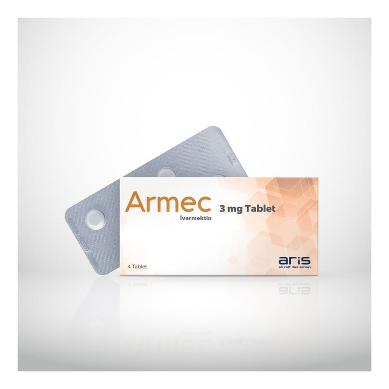

Armec 3 mg Tablet, 4 Adet

Ne için kullanılır
KT · Bölüm 1ARMEC, 4, 10 ve 20 tablet içeren karton kutu ambalajlarda kullanıma sunulmuştur. Her tabletin içinde, 3 mg ivermektin bulunmaktadır.
Aşağıdaki enfeksiyonları tedavi etmek için kullanılan antiparaziter bir ilaçtır: - Bağırsakta görülen intestinal strongiloidiyaz (anguillulosis-yuvarlak solucan) adı verilen enfeksiyon. Bu enfeksiyon, "Strongyloides stercoralis" adı verilen bir yuvarlak solucan nedeniyle meydana gelir. - "Lenfatik filariasis (fil hastalığı)" nedeniyle mikrofilaremi adı verilen bir kan enfeksiyonu. Bu enfeksiyon, "Wuchereria bancrofti" adı verilen olgunlaşmamış bir solucan nedeniyle meydana gelir. ARMEC yetişkin solucanlara etkisizdir, sadece olgunlaşmamış
solucanlara karşı etkilidir. - Uyuz (küçük bir akar türünün neden olduğu cilt hastalığı). Ciltte döküntü ve şiddetli kaşıntıya neden olabilir. ARMEC doktorunuz sadece uyuz tanısı koyduğunda alınmalıdır."